Ladder demo: the scene as the interface's own picture
The same game, the same frames, before and after. Before is main (daylight room, telemetry captions);
after is demo/ladder-jokes. Captured at 1280 x 620 on the real GPU, scaled here.
The whole ladder, in one look
Six stops from the garage to the star map: garage, HQ at 100, neighbourhood at 1K, city, globe, network. Before above, after below. Look at the seam between the third and fourth column: the 3D room used to be daylight and the monitor night, one scroll apart.
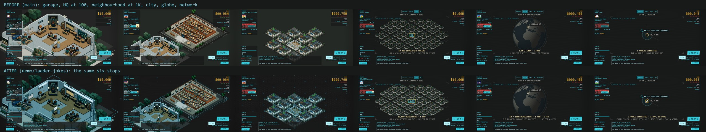
1. The garage at rest
The room lit by its own screens, in the interface's ramps. The corner brackets at the edges of the frame are the HQ's lot, drawn the way the survey frame is.
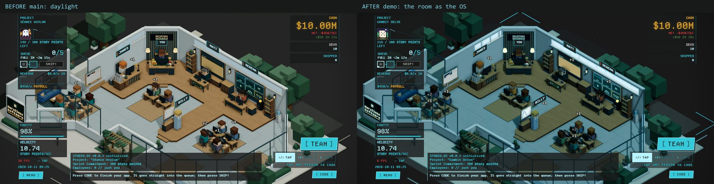
2. 100 developers: the HQ and the first house
Name plates were already interface in the world, which is why they were the bridge. Now the room around them agrees.
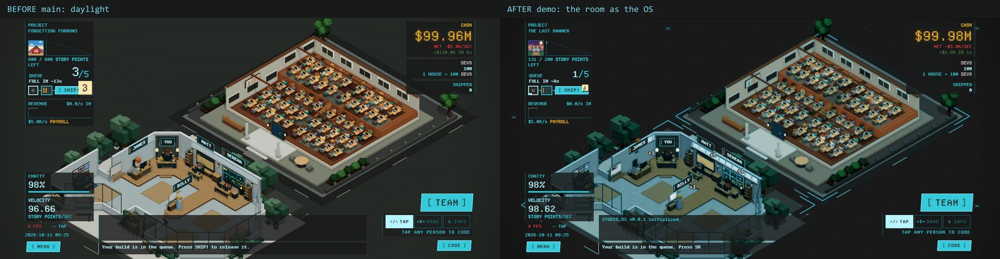
3. 1,000 developers: the neighbourhood
Lot brackets at every corner, one-pixel phosphor rules on the roof seams, and a dot-grid desktop where the world runs out.
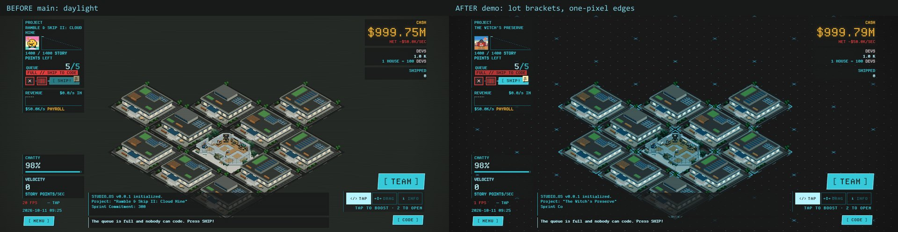
4. The last 3D frame before the monitor takes over
The ground here is measured to match the monitor's void (#181818 against #191a1a), so the hand-off changes nothing behind the picture.
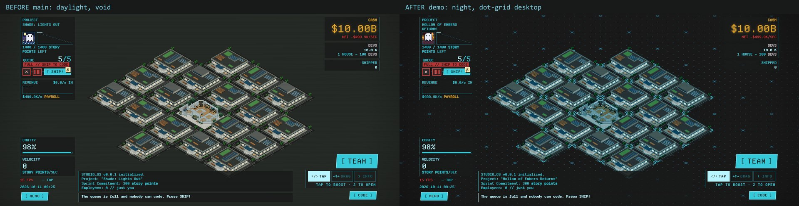
5. City at 10K
The HQ mark is the garage now, in the survey's box. The title says 10,000 DEVELOPERS · 1 APP: the one constant that climbs the whole ladder.
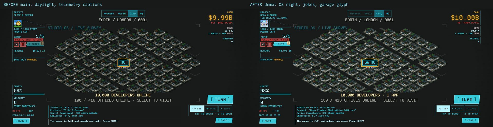
6. A city that is full
The caption now says how much of the studio this city is, 41,600 OF 100,000, where the HUD's number used to read as a contradiction. And it says when the city is full.
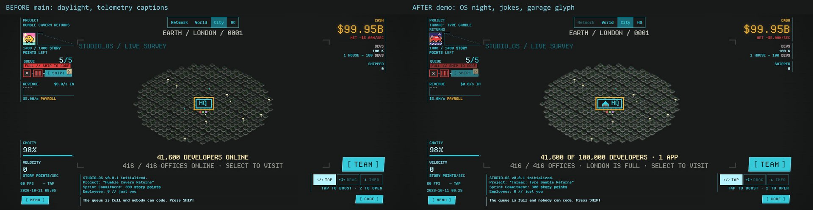
7. Globe at 1M
The remark is the scenario picker's own note, shipped: ONE PLANET, NOBODY HAS NOTICED. London's pin is the garage.
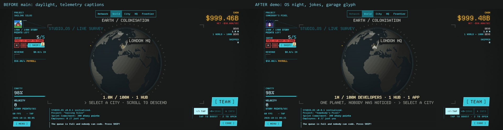
8. Network at 100M
Sol is the garage. The distance to the next desk is the chart's own figure (4.24 light-years), and "1 WORLDS" is now "1 WORLD".
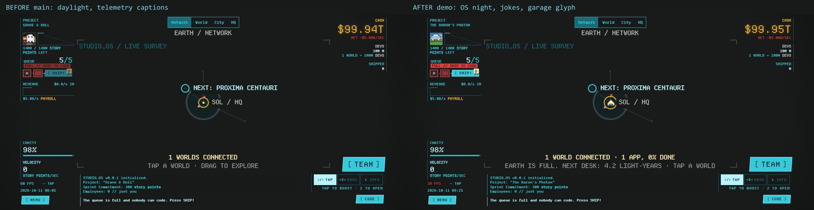
9. Network at 1B
EVERY WORLD STILL SHARES ONE BACKLOG, and the title says how done the one app is. In these captures the scenario's project has not been started, so it reads 0% (a real run shows the real figure).
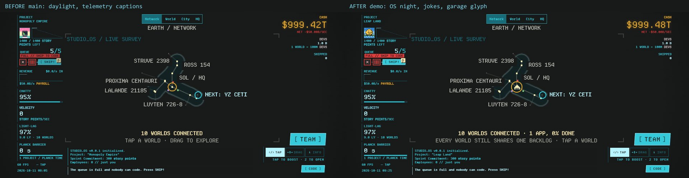
10. A stop you have not earned
At 10,000 developers the Network and World stops are dimmed. Pressing one used to do nothing, silently. It now says what it costs, from the same table as the lens ceiling. This frame is the after only, because there was no before to show.
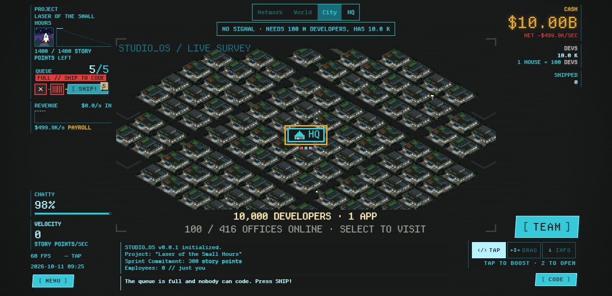